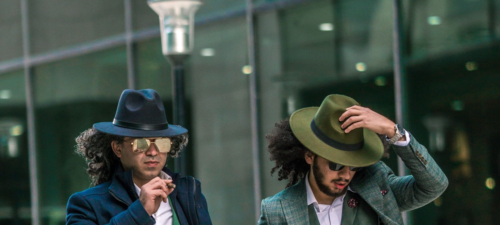
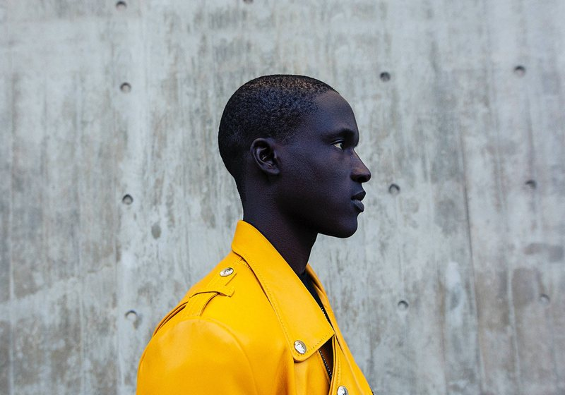
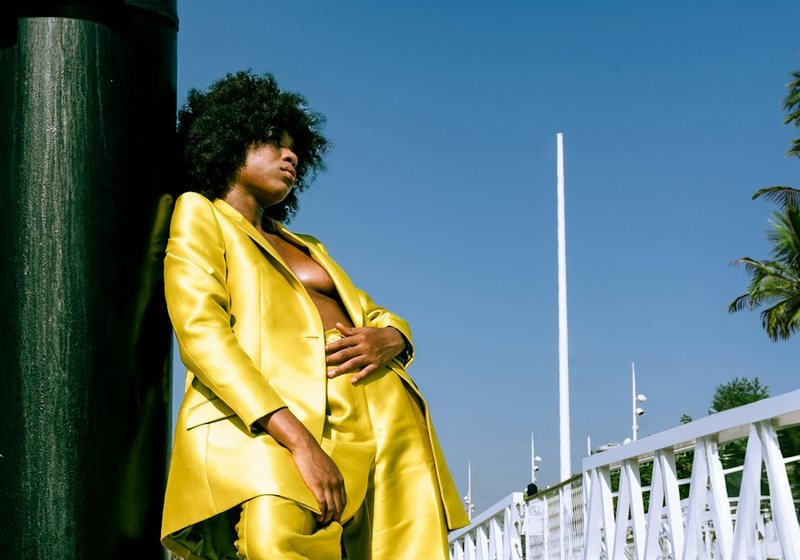

Meilleure marque de chemise homme : 11 grilles comparées au col et aux manches
Longueur de manche et tour de col annoncés, du 37 au 45, avis croisés.

Jeans, chemises, costumes, sweats. Nous comparons les grilles de tailles officielles, les grammages affichés, les prix catalogue et les avis clients avant de classer les marques.

Kiabi, H&M, Zara, Pull&Bear, Bershka, Primark, Decathlon, Lacoste. Prix relevés en magasin et en ligne, tailles mesurées sur 298 pièces, tenue après cinq lavages.




Longueur de manche et tour de col annoncés, du 37 au 45, avis croisés.
Composition affichée, doublure, retouches et prix, du costume à 120 € au costume à 450 €.
Du molleton annoncé à 280 g à celui à 450 g, bouloches et rétrécissement d'après les avis.
Pourcentage de laine annoncé, bouloches et déformation du col d'après les avis.
Étiquettes, composition et prix, vrai cuir contre simili.
Trois silhouettes complètes par marque, retouches chiffrées.
Note globale sur 10 sur le seul univers homme. La tenue au lavage des basiques compte double, c'est ce qui se rachète le plus.
Voir la méthode de notation


Comparez deux marques homme sur nos cinq critères en un clic.
Sur nos relevés 2026, Kiabi obtient la meilleure note globale de l'univers homme (7,8/10) sur le rapport qualité-prix. H&M suit sur la régularité, Zara sur le style.
Sur 12 marques mesurées, Kiabi et H&M taillent le plus juste, Zara et Pull&Bear taillent petit, Decathlon taille grand.
Nous lavons chaque pièce cinq fois à 40 °C. Lacoste et Decathlon sont les plus stables, Bershka et Shein les plus fragiles.
Cinq critères sur 10 : prix, qualité, fidélité des tailles, livraison et note globale pondérée. Les données proviennent des sites officiels des marques et des avis clients vérifiés.
Pour un costume complet à moins de 200 €, Kiabi et H&M sont les deux options les plus économiques de notre panel, avec des retouches simples sur les manches.
Un email par semaine : le classement du mois, les nouveaux comparatifs et les vraies baisses de prix relevées en magasin.
Pas de publicité, désinscription en un clic.